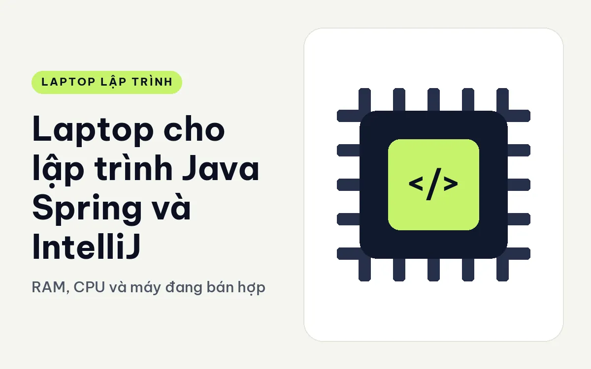
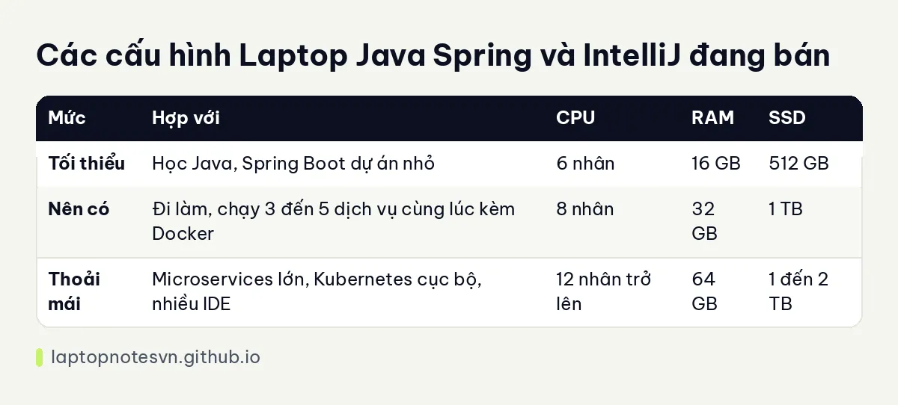

Laptop cho lập trình Java Spring và IntelliJ - RAM, CPU và máy đang bán hợp

Dân Java quen với việc máy nóng và quạt kêu mỗi khi mở IDE. IntelliJ IDEA lập chỉ mục rất kỹ, Gradle hay Maven kéo gói về liên tục, còn Spring Boot khởi động nhiều dịch vụ cùng lúc khi bạn làm microservices. Cả chuỗi đó chạy trên JVM, vốn thích RAM hơn hầu hết runtime khác.
Bài này nói rõ phần cứng nào quan trọng với Java, đưa bảng cấu hình ba mức, rồi gợi ý hai máy đang bán. Con số RAM và nhân là kinh nghiệm tư vấn, kích cỡ dự án của bạn mới là thứ quyết định cuối cùng.
JVM và IDE đòi hỏi những gì
Trước hết là RAM. IntelliJ tự nó có thể dùng vài GB cho dự án lớn, mỗi dịch vụ Spring Boot chạy thử chiếm thêm vài trăm MB đến hơn 1 GB, rồi cơ sở dữ liệu chạy bằng Docker, trình duyệt và công cụ chat. Làm một ứng dụng đơn khối thì 16 GB còn xoay xở được, còn làm microservices thì 32 GB mới thực sự dễ thở.
Kế đến là CPU. Gradle và Maven biên dịch song song, trình lập chỉ mục chạy nền, test tích hợp kéo thêm tải. Chip nhiều nhân rút ngắn thời gian bạn chờ sau mỗi lần pull code mới. Quan trọng không kém là khả năng giữ xung ổn định, tức là hệ tản nhiệt của máy.
SSD cũng góp phần. Thư mục .m2 hoặc .gradle phình rất nhanh, cộng thêm các image Docker cho cơ sở dữ liệu, Kafka, Redis. Ổ 512 GB dùng được nhưng nhanh đầy, ổ 1 TB là mức yên tâm.
Còn GPU rời thì với Java thuần gần như không cần. Đồ họa tích hợp đủ cho IDE, màn hình và việc duyệt tài liệu. Số tiền tiết kiệm nên dồn vào RAM, màn hình và bàn phím.
Từng mức RAM và CPU dùng cho việc gì
| Mức | Hợp với | CPU | RAM | SSD |
|---|---|---|---|---|
| Tối thiểu | Học Java, Spring Boot dự án nhỏ | 6 nhân | 16 GB | 512 GB |
| Nên có | Đi làm, chạy 3 đến 5 dịch vụ cùng lúc kèm Docker | 8 nhân | 32 GB | 1 TB |
| Thoải mái | Microservices lớn, Kubernetes cục bộ, nhiều IDE | 12 nhân trở lên | 64 GB | 1 đến 2 TB |
Để hiểu rõ ranh giới 16, 32 và 64 GB khi code, bạn có thể đọc lập trình viên cần bao nhiêu RAM.

Máy cụ thể nên xem trước
Cho người đi làm Java hằng ngày, Lenovo ThinkPad T14 Gen 7 (2026) là lựa chọn gọn gàng. Màn 14 inch WUXGA, chip Core Ultra 7 355 8 nhân, RAM 32GB LPDDR5x 7467 dạng LPCAMM2 có thể nâng lên 64GB, SSD 512GB. Máy nặng từ 1,29 kg, bàn phím có độ nảy khoảng 1,5 mm. Điểm yếu cần tính là SSD 512GB, nên sắp xếp dung lượng cho Docker khi làm microservices.
Nếu cần chip khỏe hơn để build nhanh, hãy nghĩ tới DELL XPS 16 DA16260 (2026). Máy dùng Core Ultra X9 388H với 16 nhân, RAM 32GB LPDDR5X 9600, SSD 1TB, màn 16 inch 2K, nặng dưới 1,7 kg và dày 14,6 mm. Màn rộng cho phép mở IDE cạnh khung Swagger hay log mà không phải chuyển cửa sổ liên tục. RAM của dòng này nên được xem là cố định theo cấu hình mua, nên hãy chọn dung lượng phù hợp từ đầu.
Chọn theo kiểu dự án Java
Ứng dụng Spring Boot đơn khối chạy khá gọn, và một máy 16GB cùng chip 6 nhân đủ cho việc học và các dự án cá nhân. Bạn nên dành thời gian làm quen với công cụ profiler để biết ứng dụng thực sự tốn bao nhiêu bộ nhớ trước khi quyết định nâng máy.
Khi làm microservices, mỗi dịch vụ là một tiến trình JVM riêng. Dù bạn chỉ chạy ba hay bốn dịch vụ để debug, tổng RAM đã vượt xa một ứng dụng đơn. Thêm Kafka, Redis, PostgreSQL chạy bằng Docker nữa là con số tăng nhanh. Lúc này 32GB giúp bạn không phải liên tục tắt bớt dịch vụ.
Dân Android native bằng Kotlin hay Java cần thêm trình giả lập, và nhu cầu cũng nằm ở mức 32GB. Còn người làm Big Data với Spark chạy cục bộ nên tính tới 64GB nếu dữ liệu thử lớn.
Vài lưu ý khi cài môi trường
- Chỉnh dung lượng heap của IntelliJ và của Gradle daemon theo RAM thật của máy, đừng để mặc định rồi tự trách máy chậm.
- Đưa thư mục dự án, .m2 và .gradle vào danh sách loại trừ của trình diệt virus để lập chỉ mục không bị chặn.
- Dùng JDK bản dài hạn cho dự án cũ và cài thêm bản mới qua công cụ quản lý phiên bản, tránh sửa biến môi trường bằng tay.
- Giới hạn RAM cho Docker và cho cơ sở dữ liệu cục bộ, đặc biệt khi chạy Kafka hoặc Elasticsearch.
- Dọn image Docker cũ thường xuyên, thư mục này hay âm thầm ăn hàng chục GB.
Nếu công việc của bạn đẩy sang vận hành container và cloud, bài laptop cho DevOps và cloud bàn thêm về phần đó.
Đăng ngày 09/11/2026